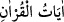
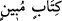
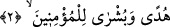
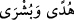

olmasaydı, O’na îman etmezdim.”
Fakir (Bursevî) der ki: “Zamanının âlimlerinden bir çoğu onu bu sözünden dolayı
tekfir etmiştir. Halbuki anlayana iş kolaydır. Onun maksadı, hakîkat ehline delil ve ıyânî
îmanlarının artmasına sebep olan harflerin mânâlarının iç yüzüne (butûn) muttali
olduğunu açıklamaktır.”
“Bunlar” İşte bu şânı büyük sûre veya bu âyetler, şânı yüce olarak tanınan
“Kur’an’ın,” içinde bulunan hikmetleri, hükümleri, sevab ve cezânın da arasında
bulunduğu âhiret hallerini “açıklayan” veya i’câzı ve doğruluğu apaçık olan, şânı büyük
“Kitab’ın âyetleridir.”
“
” Kur’an’ın özel bir isimle açıklanan ve müstakil olan bir kısmı demektir. Bu
da ya Kur’ân’ın tamamından ya da bu sûre nüzûlü zamanında indirilmiş olanların
hepsinden ibarettir. Çünkü bu ifâde mutlak kullanıldığında ilk olarak anlaşılan budur.
“
(açıklayan/apaçık Kitab)”ın “Kur’ân”a atfedilmesi, “O, günahı
bağışlayan, tevbeyi kabul eden...” (el-Mü’min, 40/2) ifâdesinde olduğu gibi iki sıfattan
birinin diğerine atfına benzer. Yâni bunlar, okunması yönüyle Kur’ân olma, yazılması
sebebiyle Kitab olma özelliğini kendisinde toplayan ilâhî kelâmın âyetleridir. Kur’an
olmanın önceliği sebebiyle bu birinci vasıf kitab olma hâlinden önce getirilmiştir. Hicr
sûresinde (el-Hicr, 15/1) ise sonraya bırakılmıştır. Çünkü orada Kur’ân’ın diğer
kitapların kemâlâtını içinde toplamasından başka diğer kitaplardan üstün olduğuna
işâret edilmesi onu övme konusunda daha etkilidir. Zîrâ onun kitab olma/yazılmış olma
özelliğini taşıdığının belirtilmesi, ilâhî kitapların kemal özelliklerini de içine aldığını
belirtir. Sanki Kur’ân, ilâhî kitapların tamamı gibidir.
Keşfü’l-esrâr’da der ki: “Kuran ve Kitab, Muhammed (s.a.)’e indirilenin iki özel
ismi, okunduğu ve yazıldığı için de iki vasfıdır. Harf-i ta’rifle geldiği yerlerde özel
isim/alem, nekre olarak geldiği yerlerde ise sıfattır.
2. Îman eden müminler için bir hidâyet rehberi ve bir müjdedir.
Yâni bu âyetler mü’minlere yol gösterici ve müjdeleyici olduğu halde demektir. “
” masdarları, sanki o hidâyetin ve müjdenin kendisiymiş gibi mübâlağa için
fâil makamında getirilmiştir. Mü’minler zâten hidâyete ermiş oldukları halde âyetlerin
onlar için hidâyet olmasının mânâsı, onların hidâyetini artırır demektir. Allah Teâlâ
şöyle buyurur: “Îman edenlere gelince (bu sûre) onların îmanlarını artırır.” (et-
Tevbe, 9/124) Âyetlerin mü’minleri müjdelemesine gelince bu açıktır. Çünkü âyetler
onları Allah’tan bir rahmet ve hoşnutluk ile müjdeler. Kur’an’dan mü’minler
faydalandığı için onlar özel olarak zikredilmiştir.